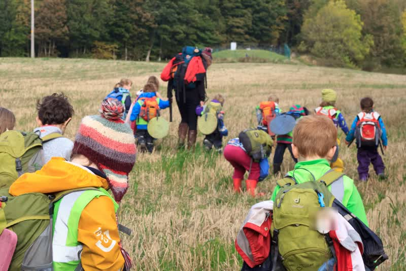
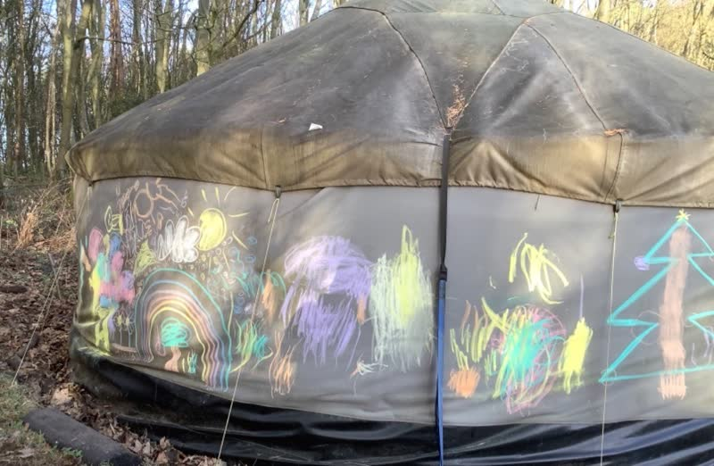
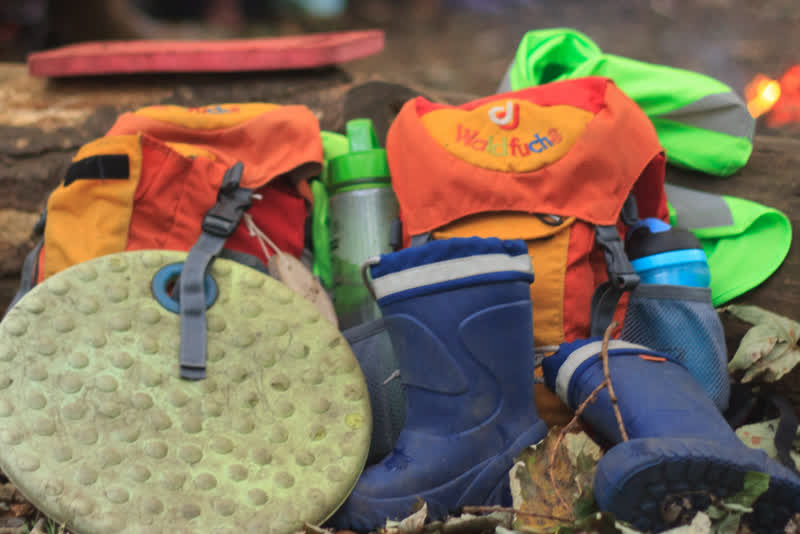
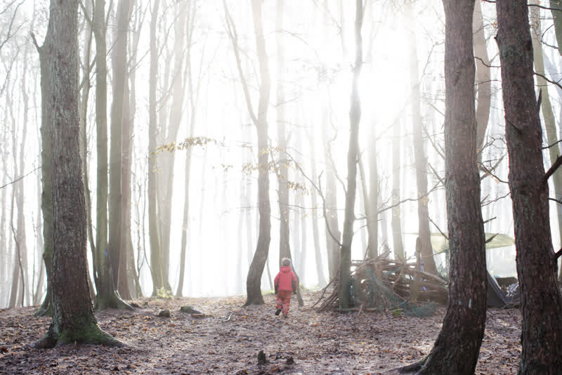

Our nursery
We’re fully outdoors, in 25 acres of woodland north of Letham. This is the place, the day, and how we look after your child.

The place, stop by stop
From the park to the woods
Real photos of our woodland, in the order your child meets each place.
-
Stop 1 of 5
Setting off

Rucksacks on and sit mats packed, the group sets off together. Each day starts in the park. Children arrive dressed for the weather. Then we all walk up the hill to the woods, at a good pace so everyone warms up.
- Drop-off and pick-up are in the park. Phone to check where to meet.
- Arrive fully dressed, with waterproofs over wellies. If waterproof trousers have braces, they go on last, so going to the toilet is easier.
- In winter, children need a head torch, or a hat with a torch, for the walk back down in the dark.
-
Stop 2 of 5
Through the willow arch

The yurt, seen through the willow arch. In the woods, a living arch of willow opens onto a grassy clearing and the yurt.
- Children weave shapes from pieces of fallen willow they find.
-
Stop 3 of 5
The yurt

The yurt in winter, with its chimney. 
Children’s own chalk drawings on the yurt wall. The yurt is our shelter from rain, snow and wind. Tarps give more cover around the woods.
- The yurt has a chimney, so it can be warmed by a fire.
- A blanket-lined tent for any child who needs a rest in a quiet corner.
- Toilets and handwashing: ask us when you visit.
-
Stop 4 of 5
Round the fire

Sit mats, wellies and rucksacks by the log seats at the fire. Children help to gather sticks, sort them and build the fire, inside a fire safety circle. We warm up, eat and hear stories here.
- An adult tells a story after lunch every day.
- In winter, children help with jobs like collecting sticks and learning to saw.
-
Stop 5 of 5
The woods

Slopes, leaf piles and trees to climb. 
A misty morning, and a den of branches. Children play freely across 25 acres of woodland: building dens, climbing, digging in mud, sliding and planting.
- Raised beds where children grow food for snack.
- Staff stay close and calm, “like trees”: near enough to help, without taking over the play.


A day at nursery
A day in the woods
- MorningDrop-off in the parkA warm breakfast first helps.
- MorningWalk up the hill together
- MorningCircle time“What will we need today?” Circle times through the day help children plan, rest and change the game.
- All dayFree play in the woodsDens, climbing, mud, fire and planting, led by the children’s ideas. Snack along the way.
- MiddayLunch, then a storyLunch from home, by the fire or in the yurt.
- AfternoonPlay, yoga or an adventureSometimes to another part of the woods.
- End of dayBack down the hill to the parkHome time.
Times for each group
We run two groups, Buttercups and Foxgloves, with slightly different start and finish times. Phone to check your child’s times. On Fridays we close at 1pm.
Outside every day
In every kind of weather
Rain, wind, sun and snow each bring their own play. Staff show children how to enjoy all of it.
When the weather turns
- Children help decide what we need: move, pack up, add layers or change the game.
- The yurt, tarps and the fire give shelter and warmth.
- Chasing games, climbing and jobs like sawing sticks keep everyone moving.
We check the forecast Staff plan each day around the weather and the kit children need.
Keeping warm and dry
- Layers of thermals, fleece and wool. Cotton soaks up water, so we avoid it.
- Waterproof mittens with a strap, and insulated wellies in winter.
- A warm lunch or a warm drink in a flask.
- We can lend clothing and boots, and staff are happy to advise on kit.
Food
Snack and lunch
We provide snack. Children bring their own lunch from home.
Snack
Our “Grow Your Own Snack” raised beds add fruit and vegetables to snack. Children help to pick, prepare and cook them, and often try new things.
We store snack in reusable containers. The woods have no bins, so we take home everything we bring.
Lunch from home
Warm, filling food is best: porridge, beans, pasta, soup or leftovers in a flask. A warm drink helps a child who won’t eat warm food.
Meals at funded sessions: phone to check what we provide.
Allergies and dietary needs Ask us how we handle them when you visit.
How we play and learn
Presence, nature, play
These are our three guiding ideas. Staff are calm and present. Nature is the teacher. Children learn through their own play.
We plan around Scotland’s Curriculum for Excellence. Our own “Spiral Curriculum” uses symbols from the woods, like Ivy for asking for help and Squirrel for leading an idea. Staff are happy to explain it when you enrol.
Children meet numbers and letters through play: measuring sticks for a den, songs, stories and marks on paper or the ground.
Support for your child
Talk to us about your child’s needs when you visit. We give extra focus to children whose speech and language is slower to develop.
Starting school
We can talk you through starting P1, deferring, or a “Buzzard” year with us alongside school. Read about who can come.
Inspection
What inspectors found
The Care Inspectorate inspects every nursery in Scotland. These are all the grades from our latest report.
Care Inspectorate grades
- How good is our care, play and learning?5 Very good
- How good is our setting?5 Very good
- How good is our leadership?5 Very good
- How good is our staff team?5 Very good
Grades run from 1 (unsatisfactory) to 6 (excellent).
Read our latest inspection reportEarlier inspections
In December 2022, an inspection that focused on handwashing graded us 3 (adequate). In our own words: “We quickly put their recommendations into place and we were signed off shortly afterwards as meeting the requirement.”
In July 2021, the Care Inspectorate graded our care during the COVID-19 pandemic 5 (very good).
Every report, and any upheld complaints, are public on our Care Inspectorate record.
Visit the woods
Bring your child to see the nursery in action. Children under 3 are welcome to visit.